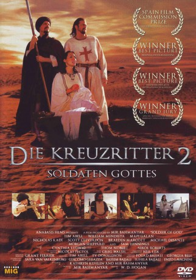
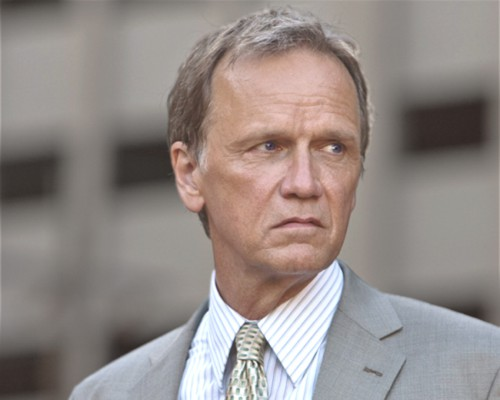
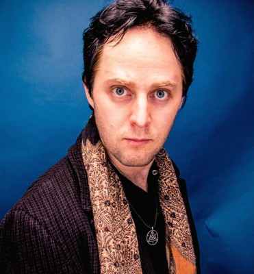
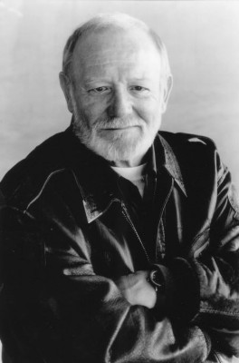
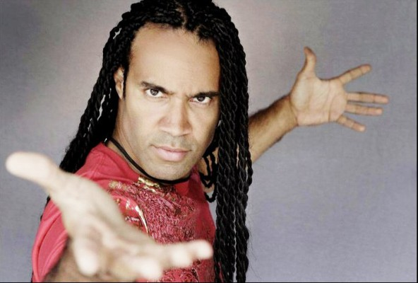

#10871 Die Kreuzritter 2
Alternativ: Soldier of God (Englischer Titel)
 
 IMDB-Wertung: 4.7 / 10
IMDB-Wertung: 4.7 / 10  Metascore: 0
Metascore: 0 
Das Heilige Land 1187: Rene ist ein hingebungsvoller Mönch der berüchtigten und kriegerischen Tempel-Ritter, einem religiösen Orden, dessen Mission es ist, die christlichen Pilger zu beschützen. Bei der historisch erwiesenen, verheerenden Schlacht bei den Horns of Hattin wird er fast getötet. Während dieser Kämpfe stirbt ein Großteil der christlichen Armee. Rene wird auf dem Schlachtfeld von Banditen gefangen genommen, kann aber entkommen und in die Wüste fliehen. Er wird von Hasan, einem mysteriösen islamischen Reisenden, vor dem Verhungern gerettet. Als Hasan von der Vorhut der Armee Saladins attackiert wird, kann Rene sich revanchieren und ihm helfen. Die beiden suchen Zuflucht in einer abgeschiedenen Oase, dem Heim von Soheila, der Witwe eines islamischen Kriegers. Soheila pflegt den schwer verwundeten Hasan wieder gesund. Doch das gegenseitige Misstrauen mündet in einem brutalen Entscheidungskampf.
Jahr: 2005
Dauer: 94 Minuten
FSK: 12
Land: USA Studio: Anthem PicturesTonspuren: DTS - ,
Untertitel:
Auflösung: 1080p (1920x816) Größe: 5560 MB
Genre: Drama
Regisseur: W.D. Hogan
Drehbuch: Mir Bahmanyar, Kathryn Kuhlen
Soundtrack: Greg Walsh
Darsteller:
- Tim Abell als Rene
- Bill Mendieta als Hasan
- Nicholas Kadi als Omar
- Scott Cleverdon als Geoffrey
- Michael Desante als Yaqut
- Paul Michael Bloodgood als Extra fighter
- Fernando Chien als Featured fighter
- Charles Fathy als Brigand 1
- David Franco als Nizar
- Elizabeth Frank als Extra fighter
- Robert Gantzos als King Guy
- Kast Hasa als Brigand 2
-  Sam Hennings als Gerard de Ridfort
-  Taliesin Jaffe als Extra fighter
- Paul Jene als Christian Knight
- Jamison Jones als Featured fighter
- Steve Kim als Extra fighter
- Gary Lamb als Abed
- Braeden Marcott als Solomon
- Micah May als Extra fighter
-  William Morgan Sheppard als Raymond of Tripoli
-  T.J. Storm als Muslim Champion
- Kent Winfrey als Featured fighter
- Mapi Galán als Soheila
- Woody Adams als Extra fighter
- Mercedez Alexander als Extra fighter
- Richard Alsabery als Extra fighter
- Ron Baker als Extra fighter
- Brandon Beebe als Extra fighter
- William Best als Extra fighter
- Jessica Cail als Featured fighter
- Andreas Cederlund als Extra fighter
- Kit Davlin als Featured fighter
- Justin DeNino als Ghazzi
- Jeanne Desilets als Extra fighter
- Anthony Eikner als Christian Emissary
- James Foster-Keddie als Extra fighter
- David Huyah als Extra fighter
- Daron Jones als Extra fighter
- Delbert Jones als Extra fighter
- Geoffrey C. Kosty als Extra fighter
- Gregory Charles Kosty als Extra fighter
- Larry Lederman als Reynald de Chatillion
- Eddy Manago als Extra fighter
- Thom A. Noblitt-Gonzales als Extra fighter
- Sam Putroos als Extra fighter
- Richard Rasner als Extra fighter
- Meredith Rose als Mary, Mother of Jesus
- Summer Russell als Extra fighter
- Travis Sentell als Extra fighter
Datei: X:\2005(G-M)\Kreuzritter 2, Die (2005, FSK12, 1920x816).mkv seit 03.04.2019
Festplatte: HD 2005(G-Z)-2006(A-Z)
 Es gibt insgesamt 46 Filme in der Gruppe '2005(G-M)'
Es gibt insgesamt 46 Filme in der Gruppe '2005(G-M)'